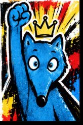

Le coin des défis
JEUX
Un mot à deviner, une partie à gagner, une carte à explorer… Choisis ton défi et amuse-toi !

NOUVEAU · LOGIQUE
ZOUKU
Un loup par ligne, colonne et région colorée. À toi de résoudre les grilles !
JOUER À ZOUKU →LES FAVORIS
Logique · Déduction🐺 ZoukuPlace un loup par ligne, colonne et zone colorée. Élimine les cases avec des croix, progresse à ton rythme et découvre la surprise du super-héros !Jouer →
Calcul mental · Duel🪢 Maths à la cordeJoue à deux face à face ou défie l’ordinateur. Additions, soustractions, multiplications et divisions en Expert : chaque bonne réponse fait avancer ton équipe !Jouer →
Géométrie · Manipulation🧩 Tangram vivantDéplace, tourne et retourne sept pièces pour reconstruire huit silhouettes, sur trois niveaux.Jouer →
Calcul mental · Logique🎯 Le compte est bonCombine six nombres avec les opérations pour atteindre la cible.Jouer →
Vocabulaire · Mots🔤 Le penduDevine les mots de français, d’histoire, de sciences et de géographie.Jouer →
Déduction · Logique🧠 MastermindDécode une combinaison secrète grâce aux indices de couleurs.Jouer →
Logique · Nombres🔢 SudokuRésous des grilles uniques à trois niveaux, avec notes, indices et chronomètre.Jouer →
Géométrie · Symétrie axiale🪞 Miroir MagiqueComplète les figures en miroir sur un quadrillage. 40 défis sur quatre niveaux, avec triangles et figures complexes.Jouer →
StratégieZou ÉchecsTrois espaces pour suivre une séance en classe, t’entraîner au dojo ou jouer une partie.Ouvrir →
Lettres · Mot du jourSUTOMTrouve le mot mystère avec les indices donnés après chaque essai.Deviner le mot ↗
Vocabulaire · À plusieursCémantixPropose des mots et approche-toi du mot secret grâce à leur sens. Un défi à chercher ensemble.Chercher le mot ↗
À DÉCOUVRIR
Anglais · Langues🦉 DuolingoEntraîne-toi en anglais avec de courtes activités interactives et progresse à ton rythme.S’entraîner ↗
Géographie · CarteSeterraPlace les pays voisins de la France sur la carte.Explorer la carte ↗
CM2 · Mini-jeuxLogiciel ÉducatifChoisis un jeu de maths, de français ou de logique adapté au CM2.Choisir un jeu ↗
CM2 · QuizLumniTeste tes connaissances avec des quiz sur les matières de l’école.Faire un quiz ↗
Continue l’aventure sur Zou Maï
Des jeux de calcul, de stratégie et de géométrie fabriqués pour la classe.
Tables de multiplication →Jeu des aires →Défi Mathador →Les jeux extérieurs s’ouvrent dans un nouvel onglet. Certaines activités peuvent être plus faciles à jouer à deux.